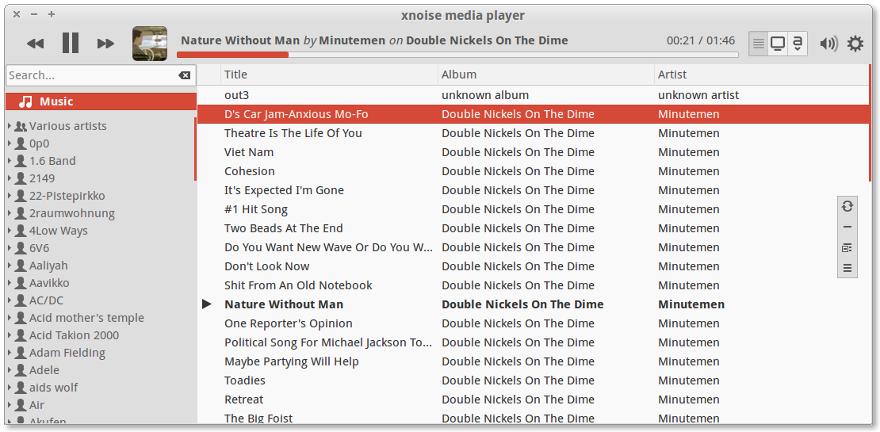
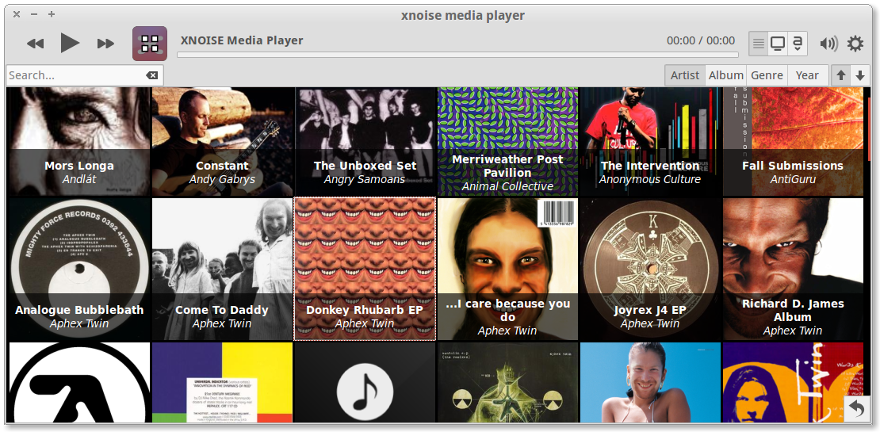
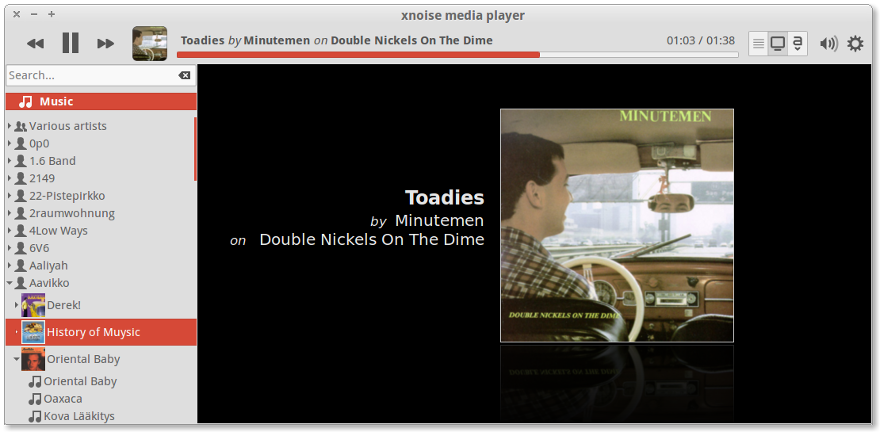

+++++++++++++++++++++++++++++++++++++++++++++
Xnoise development has come to an end, because there is no developer working on this program.
The sourcecode is still available and may be forked under the respective license.
+++++++++++++++++++++++++++++++++++++++++++++
Media Player for big music collections
Xnoise is a media player for GTK+ with an intuitive user interface, great speed and lots of features.
Xnoise allows listening to music and playing video in a very intuitive way: You can easily search the library and drag each artist, album or title to the tracklist (to any position in any order).
In the tracklist all queued tracks (music or video) are played one by one without being removed. There, you can reorder, insert or remove any track as it comes to your mind.
The media library (left side) contains all available media as a hierarchical tree structure of media tag metadata. It is easy to find any single track, artist, album or genre by using this tree structure or by just entering a search term. Here you find all you music, streams or videos in a nicely presented, searchable way.
We are sponsored by: Free spins, Lip enhancement Melbourne, Melbourne Life Coaching, Lip enhancement Sydney, stylewe limited
Features
Xnoise has a whole lot of features. Among these are:
- Simple GUI without clutter
- Fast(!) searchable media library
- Album Art view for a convenient view on album cover images
- Music and Video support
- Equalizer with sound presets
- Automatic media folder monitoring
- Integrated ID3/Xiph/Wma/Ape/... tag editing
- Automatic album art fetching
- Android device and other media player support
- 'Now playing' pane
- State restore
- Can play virtually all media via GStreamer
- Media key support
- Lightweight and speedy!
- Optional Ubuntu unity integration (Quicklists, HUD, ..)
- Plugins for MPRIS, Magnatune, LastFm (album art and scrobbling), Lyrics fetching, Notifications, Ubuntu Soundmenu, ...
- Available for a lot of different languages
- ...more!...
Screenshots


Video
Our site is hosted on bluehost with these bluehost coupon codes